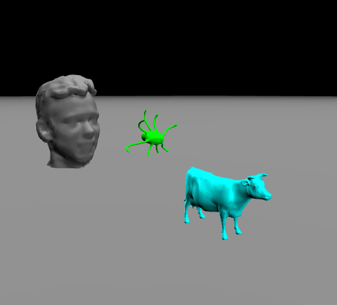
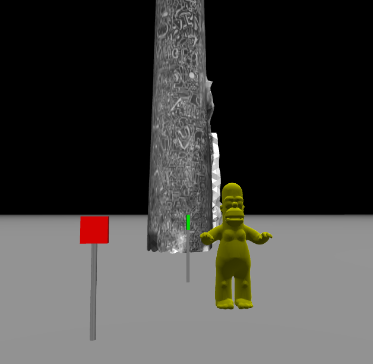

Assignment 1: Build Your Virtual City (34 Points)
Chris Tralie
Click here to see the art contest results
Overview / Logistics
Watch the video below for a primer on this assignment:
The purpose of this individual assignment is to enable you to brush up on your knowledge of methods and how they fit together, and to practice them in a new language: C++. It is also an opportunity to practice reading documentation for existing methods to learn how to use them, which is something you will often do in practice, since we rarely re-invent the wheel and often use code that other people write (often called a library).
This assignment will also get you to practice the edit -> compile -> run -> edit loop, since you will have to tweak your shapes many times to get a good result.
The specific task in this assignment is to write code to generate 3D worlds. It's much easier if you write methods whose sole job is to draw a particular city object, like a fire hydrant or stop light. Then, you can replicate these objects many times by calling the methods over and over again to create complicated parts of the your world (like city blocks). Putting complicated things completely in one chunk of code to be reused many times with minor variations is an example of encapsulation, which is a major theme of this class.
You can download the code for this assignment by using git in the terminal
git clone https://github.com/ursinus-cs174-s2023/HW1_VirtualCities.git
You will be writing code that writes HTML files with information about 3D scenes, which you can open with the live server in VSCode.
Learning Objectives
- Write methods to fit a specification
- Follow documentation to use pre-defined methods
- Use methods together in concert to accomplish a task
- Write a complete program with very little code in the
mainfunction - Work with 3D coordinates programmatically
- Use C++ makefiles and the terminal to build and run programs
What to submit
When you are finished, you should submit zip file of your HW1_VirtualCities directory to canvas. This should contain all of your code, the .json scene files for both the city scene and your art contest, and any animated GIFs you made for your art contest. Also submit a comment on canvas with answers to the following questions
- What title would you like to use for your art contest submissions, and what name/pseudonym you would like to use? (results will be displayed on the class web site).
- Any other concerns that you have. For instance, if you have a bug that you were unable to solve but you made progress, write that here. The more you articulate the problem the more partial credit you will receive (fine to leave this blank)
Background: 3D Coordinate Systems
A point in 3D space is represented with 3 coordinates: one in the x-axis, one in the y-axis, and one in the z-axis. There are a few different ways to define such a coordinate system, but we will stick to the OpenGL convention in this class. Below is a sketch of the positive coordinate axes for x, y, and z. A point (a, b, c) can be obtained by creating a rectangular prism with side length a along the x-axis, b along the y-axis, and c along the z-axis. The point then resides on the vertex of the cube furthest from the origin where the three axes meet (the red point).

Rotations in 3D
In this assignment, rotations are represented by so-called "Euler Angles." In our case, rotation first happens about the X-axis, then the Y-axis, then the Z-axis. There's more information at this link for those who are curious.
Background: RGB Colors
In addition to perceiving space in 3 dimensions, humans interestingly also perceive color in 3 dimensions. One basis for color representation is the "RGB" or "Red, Green, Blue" axes. Each axis is represented with 8 bits, so possible values are from 0 (no color) to 255 (full saturation of that color). For instance, rgb(255, 0, 0) is red, and rgb(0, 0, 255) is blue.
The widget below allows you to play around with colors, which you may want to do for the art contest.
Background: 3D Scenes And Shapes
In this assignment, you will be creating 3D worlds, also known as "scenes," that can be loaded into the browser. As in the HTML holidays lab, your C++ program will write HTML code that you then launch. You don't have to worry writing code strings yourself this time, though. Instead, I have provided a series of high level functions that you can use to draw shapes, and which will automatically convert to code on the backend that uses the three.js library (fun fact: this assignment used to use my own engine, ggslac, but I decided to upgrade because students kept making scenes so big they'd slow it to a crawl).
The full documentation for drawing shapes can be found at this link. Below are a few examples with links to the respective documentation. There are two versions of most methods: one for drawing an "axis-aligned" shape, and one for drawing a rotated version. You'll mostly be using the axis-aligned versions in the tasks.
3D Box
- Click here to view the documentation for drawing an axis-aligned box.
- Click here to view the documentation for drawing a rotated box.
Cylinder
- Click here to view the documentation for drawing an axis-aligned cylinder.
- Click here to view the documentation for drawing a rotated cylinder.
Cone
- Click here to view the documentation for drawing an axis-aligned cone.
- Click here to view the documentation for drawing a rotated cone.

Sphere
- Click here to view the documentation for drawing a sphere.
Ellipsoid
An ellipsoid can be viewed as a stretched out version of a sphere or a 3D generalization of an ellipse.
- Click here to view the documentation for drawing an axis-aligned ellipsoid.
- Click here to view the documentation for drawing a rotated ellipsoid.
Meshes
For the art contest, you have a variety of triangle meshes available, including my head ("proftralie"), 100 shapes from the Princeton shape benchmark, and a few others, which can all be found in the meshes folder of your assignment. Click here to view the documentation for the addMesh method.
Here's an example with three of the meshes. You may need to scale them to get them to the size you want, since they have all been "normalized" to the same scale.
Textured Meshes
In addition to 3D surfaces with a uniform color, it is also possible to load meshes with a texture, or a picture that gets wrapped around the mesh.
Click here to see documentation on this method.
I've provided one such mesh with the project: the Ursinus smokestack. Below is code that shows how to draw it:
And below is the scene that results
For the art contest, you can find meshes like this online, as long as you credit them. If they're not in obj format, let me know and I can help convert them.
Programming Tasks
You will start by making a series of methods that draw specific city objects. Since you'll want to draw many copies of these in different places, you must specify parameters to move the shapes around. For example, if I have a box that's normally centered at (1, 2, 5), I should be able to specify a difference of cx and cz to shift it in the X and Z directions, so that the new box would be centered at (1+cx, 2, 5+cz) You don't have to get the exact shapes that are shown in the pictures, but you should get reasonably close. I'll start by giving you a simple example below that draws a street sign.
Example: Sign
We can draw a simple sign with a thin cylinder for its poll and a thin box for the sign itself. Below is an example of how one might accomplish this with a method
Here's an example code snippet that calls this method to create two signs. For kicks, I also threw in Homer Simpson and the Ursinus smokestack!

NOTE: The syntax void drawSign(Scene3D& scene ...) may seem a bit strange at this point in the course. We will talk about this more later, but scene is an object of type Scene3D, and the Scene3D& prefix is indicating that we want to pass scene by reference. This means that we're not creating a copy of the scene when we call the method, but we're actually referring to the same scene across methods. Then, we can call a method within the object with scene.method(). Don't worry if this doesn't totally make sense yet...just follow drawSign as an example when you're doing other methods, and you'll be fine.
Running The Engine And Viewing The Scene
To run the 3D engine provided with this assignment and interactively view your scene, you need to save it to an HTML file. For example, the following is in simplescene.cpp after all of the drawing commands
To generate this, you have to build your file and run it. First, open the folder containing your project in VSCode (it's important that you open the folder specifically for the live server). Then, compile your c++ program and run it. In the image below, I'm showing doing this with a makefile. Once you run it, it will generate a file with whatever name you chose in saveScene. Right click on this file in VSCode and click "Open with Live Server". This will pop up with a window in your browser where you can interactively view the scene. If you keep this window open and regenerate the scene, it will automatically refresh!
Setup / Makefile (3 Points)
First, to get started, you should setup a file called myscene.cpp that you will compile to generate your scene. You should keep the main method very small, as per the style guide. As an example, you can refer to the file simplescene.cpp, which sets up the small example scene above with two signs and Homer Simpson. Finally, to make your job quicker as you go along, you should add an appropriate entry to your makefile.
Tree (5 Points)
Create a method that draws a simple "lollipop" tree, which consists of a brown (rgb 102, 51, 0) trunk of a specified height, and a green (rgb 0, 255, 0) ellipsoid for the "leaves." The height should be a parameter to the method so you can draw trees of varying heights.
Below is an example of an 8 meter tall tree next to a 6 meter tall tree (so calling the method twice).

Fire hydrant (5 Points)
Create a method that draws a red (rgb 255, 0, 0) fire hydrant that is roughly 1 meter tall. The fire hydrant should consist of a small cylinder at its base with a larger, thinner cylinder on top. It should also consist of a sphere on the top of the taller cylinder, and two boxes coming out right below the sphere.

Stop light (5 Points)
Create a method that draws a stop light. The main pole on the left should be 8 meters tall, and the horizontal pole at the top should be 8 meters wide. Attach a box to the horizontal poll that will hold the lights. The top light should be a red (rgb 255, 0, 0) sphere, the middle light should be a yellow (rgb 255, 255, 0) sphere, and the bottom one should be a green (rgb 0, 255, 0) sphere.
Below is an example stoplight with a fire hydrant next to it for scale.

Sedan (5 Points)
Create a method that draws a (very boxy) car, either facing east/west or north/south, with a particular color. It should have one box of that color that is 4.5 meters long, 1.7 meters wide, and 0.7 meters tall. On top of that, it should have a slightly offset box that is 3.5 meters long, 1.4 meters wide, and 0.8 meters tall. On the bottom box, there should be two grey cylinders of radius 0.5 and height 2 to represent the wheels. For the east/west car, you will have to rotate the cylinder around the x-axis by 90 degrees, and for the north/south car, you will have to rotate the cylinder around both the x-axis and the y-axis by 90 degrees.
Below is an example of a red east/west car and a yellow north/south car, with a fire hydrant and stop light for scale (that red car should probably get out of the way!)

City Block (5 Points)
Create a method that creates a city block by calling the other methods. It should have the following:
- At least two cars
- At least two trees of different heights
- At least one fire hydrant, stop light, and sign
- At least one building (which can simply be a large box)

Finally, setup the method so that it takes an offset, and use it to draw at least two copies of this city block to create an entire city.

Style (3 Points)
You will be graded on adherence to the style guide. Pay particular attention to your method documentation.
Mandatory Art Contest (3 Points)
Create a c++ file artcontest.cpp and a corresponding makefile entry to create an executable called artcontest, which outputs a file artcontest.html with any virtual world you want. Unleash your creativity! Your scene does not have to be a city. Indicate in your submission a title for your scene and what name or pseudonym you would like to use for the contest. The winner will receive 5 points of extra credit.
In addition to the scene, you may also want to submit a movie of it. The GIF below shows how to select two different cameras and automatically fly between them
NOTE: It may take a long time to generate this GIF, and you may have to refresh the page when you're finished downloading it.

The result is as follows